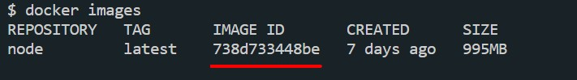
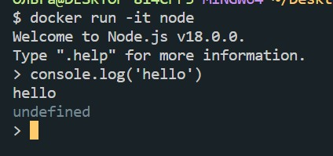

Образ - это некоторый шаблон, на основании которого создается контейнер (докер) image - существует только для чтения, его изменить нельзя. Образы публикуются в DockerHub. Что бы запустить приложение необходимо на основании контейнера создать докер контейнер.
Для того что бы скачать образ мы можем зайти в DockerHub, найти там необходимый образ и спулить его. Например, вот как будет выглядеть команда скачивания образа Node.js
docker pull nodeОткрываем PowerShell, вводим команду и после этого начнется скачивание образа.
Для того что бы запустить контейнер на основании имеющегося контейнера необходимо ввести команду:
docker run <имя_контейнера>Так же допустимо вместо имени контейнера указывать его идентификатор
-it - говорит о том, что контейнер будет запущен в интерактивном режиме. На примере с node контейнер не завершится сразу после вызова, а мы попадем в консоль node.js который будет запущен внутри контейнера.
Для того что бы выйти из интерактивного режима необходимо ввести в консоль команду .exit